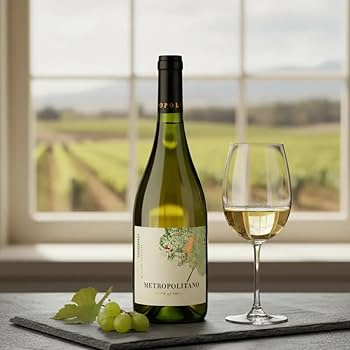

Principais uvas e estilos de Vinho tinto
- Cabernet Sauvignon: Considerado o rei dos tintos, tem o corpo forte e taninos marcantes. Combinando bem com carnes vermelhas.
- Merlot: É mais suave e leve, com sabor frutado. Combina com massas e carnes leves.
- Malbec: Tem cor intensa e sabor de frutas maduras, com taninos macios. É famoso na Argentina e Combina muito bem um churrasco.
- Pinot Noir: É um vinho leve, delicado e com poucos taninos. Combina com frango e peixes.
- Syrah (ou Shiraz): É forte e traz notas de especiarias como pimenta preta. Combina bem com carnes vermelhas
- Tannat: É um vinho muito potente, encorpado e com alta concentração de taninos. Combina com pratos gordurosos.
Principais uvas e estilos de Vinho branco

- Chardonnay: É a rainha das uvas brancas, muito encorpada e versátil. Quando passa por barricas de carvalho, ganha notas de manteiga e baunilha. Quando jovem, traz frutas tropicais. Combina com comidas leves.
- Sauvignon Blanc: Um vinho altamente aromático, fresco e leve. Destaca-se pelas notas herbáceas (grama cortada) e cítricas (maracujá, limão). Combina com pratos cítricos.
- Pinot Grigio (ou Pinot Gris): Conhecido por ser um vinho leve, refrescante e fácil de beber. Apresenta sabores sutis de maçã verde e pera. Combina com comidas leves, como peixes.
- Riesling: Famoso por sua alta acidez e aromas florais marcantes. Pode variar desde um estilo completamente seco até vinhos de sobremesa muito doces. Combina com pratos picantes, pois ajuda a aliviar com sua acidez cortante.
- Moscato: Bastante aromático e geralmente associado a vinhos doces e frisantes. Traz notas intensas de uva fresca e flores brancas. Combina com sobremesas na maioria das vezes.